Free fall on a fixed center and harmonic oscillator.
Newton’s equation for the free fall (Unnecessary constants have been removed) :
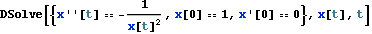
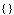
That equation is best integrated analytically by considering the energy first integral, (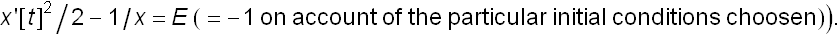 Here is the solution in implicit form t=time(x) :
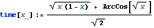
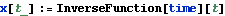
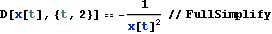
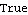
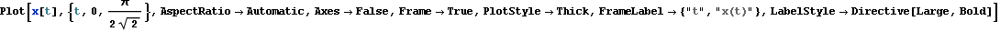
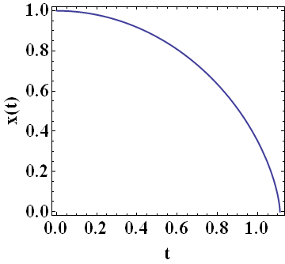
A forward numerical integration suspects the presence of a singularity near t=1.11... :
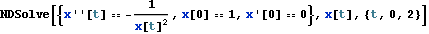
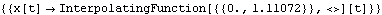
Changing both dependant and independant variables in Mathematica :
1) The change of Sundman (x= and dt=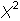 dT) :
and dt=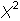 dT) :
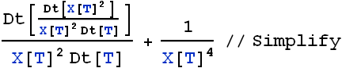
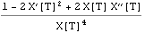
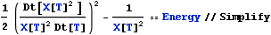
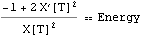
Combining the two former equations leads to a harmonic oscillation of X as a function of T.
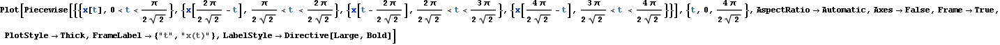
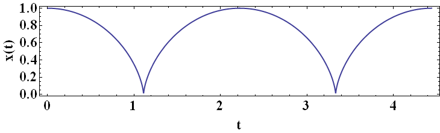

2) No monomial point transformation, x=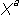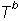 and t=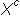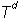 (where a, b, c, d are constants whatever their numerical values) can achieve such a reduction :
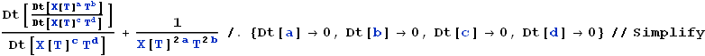
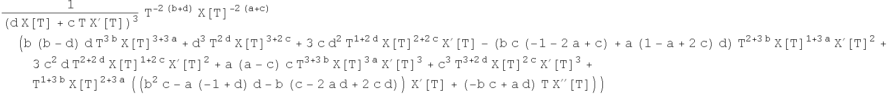
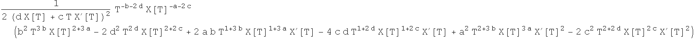